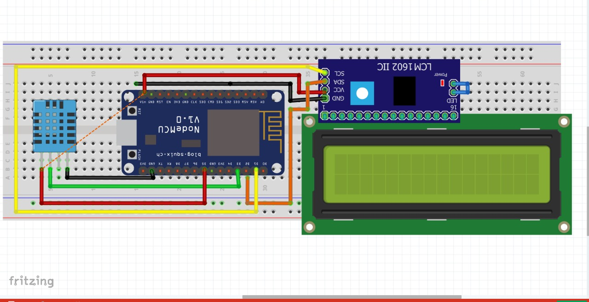

Sensor DHT11 → ESP-12E
- VCC DHT11 → 3.3V ESP-12E (atau 5V jika modul DHT11 mendukung)
- GND DHT11 → GND ESP-12E
- DATA DHT11 → GPIO2 / D4 di ESP-12E
Penting: Tambahkan resistor pull-up 10kΩ antara pin DATA dan VCC agar sinyal data lebih stabil.

Penting: Tambahkan resistor pull-up 10kΩ antara pin DATA dan VCC agar sinyal data lebih stabil.